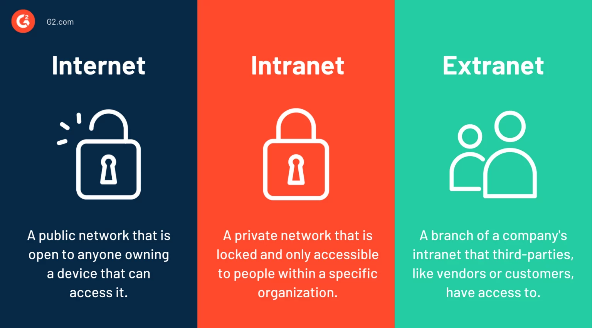
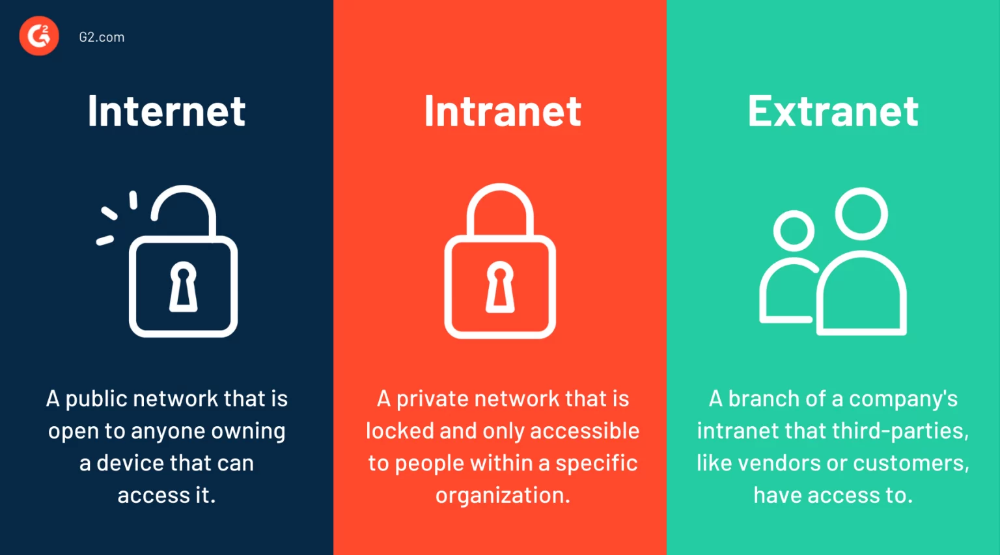

Intranet y Extranet
| Tipo | Descripción | Imagen |
|---|---|---|
| Intranet | Red privada interna de una organización. |  |
| Extranet | Permite acceso controlado a usuarios externos. |  |
| Tipo | Descripción | Imagen |
|---|---|---|
| Intranet | Red privada interna de una organización. | |
| Extranet | Permite acceso controlado a usuarios externos. |  |